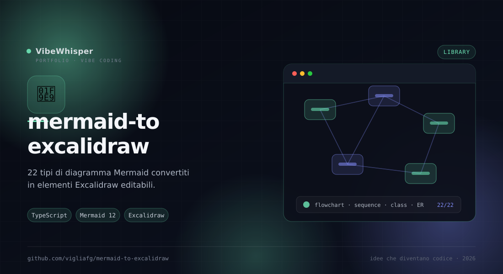

mermaid-to-excalidraw
Fork di mermaid-to-excalidraw che estende la conversione nativa a tutti i tipi Mermaid usati da Mermaid Creator: 22 casi su 22 convertiti in elementi editabili.
📖 Cos'è
mermaid-to-excalidraw è un fork del progetto Excalidraw con un obiettivo preciso: convertire in modo nativo tutti i tipi di diagramma Mermaid usati da Mermaid Creator, non solo i flowchart. L'API parseMermaidToExcalidraw() prende una definizione Mermaid e restituisce elementi e file pronti per il canvas Excalidraw. Il fork aggiunge adapter semantici per flowchart, sequence, class, state, ER e timeline, e un adapter generico che mappa le primitive SVG in rettangoli, ellissi, linee, frecce, testi e freedraw editabili per gli altri tipi.
👤 A chi serve
È pensata per sviluppatori che integrano Mermaid in Excalidraw e per chi vuole modificare a mano un diagramma generato senza ripartire da un'immagine. È la base tecnica che permette a Mermaid Creator di esportare diagrammi editabili, e può essere usata come libreria in qualsiasi progetto TypeScript.
⚙️ Come funziona
La libreria renderizza il diagramma Mermaid, ne legge il DOM e lo traduce in elementi Excalidraw tramite adapter. Gli adapter semantici conoscono la struttura del tipo (nodi, archi, relazioni); l'adapter generico lavora sulle primitive SVG e produce forme modificabili, con fedeltà approssimata per i path complessi. Se la conversione fallisce o non produce elementi, resta il fallback GraphImage. Le versioni di Mermaid ed Excalidraw sono pinnate per evitare drift tra parser e dipendenze; l'harness misura la matrice dei casi e gli snapshot visuali.
🎯 Perché mermaid-to-excalidraw
Perché un diagramma generato dall'AI è utile solo se puoi ancora spostare una scatola, cambiare una freccia o riscrivere un'etichetta. Questo fork sostituisce il fallback immagine con elementi veri, e tiene un harness che dice esattamente quanto è fedele ogni tipo.
✨ Caratteristiche Principali
- API semplice —
parseMermaidToExcalidraw(diagram, config)restituisceelementsefiles - Adapter semantici — Flowchart, sequence, class, state, ER e timeline con struttura riconosciuta
- Adapter generico — Mappa le primitive SVG in forme editabili: rettangoli, ellissi, linee, frecce, testi e freedraw
- Fallback sicuro —
GraphImageresta come rete di sicurezza se la conversione non produce elementi - 22 casi coperti — Gantt, pie, mindmap, journey, quadrant, XY chart, sankey, block, gitgraph e altri
- Versioni pinnate — Mermaid 12.2.0 ed Excalidraw allineati a Mermaid Creator, per evitare drift
- Harness di verifica — Report aggiornato in
harness/report/latest.mdcon la matrice dei casi - Test visuali — Suite con 146 snapshot, Playwright Chromium come baseline
🏗️ Come Funziona
- Installa le dipendenze con pnpm e scarica Chromium per Playwright
- Importa
parseMermaidToExcalidrawe passa la definizione Mermaid - Ricevi
elementsefilese inseriscili nel canvas Excalidraw - Usa le opzioni per fontSize, curve dei flowchart, numero massimo di archi e caratteri
- Esegui
pnpm test:visualper verificare la conversione dopo una modifica - Non aggiornare Mermaid senza aver prima aggiornato gli adapter e rieseguito l'harness
📦 Installazione
# Requisiti: Node.js 24+ e pnpm 12
git clone https://github.com/vigliafg/mermaid-to-excalidraw.git
cd mermaid-to-excalidraw
pnpm install --allow-build=@swc/core --allow-build=esbuild
pnpm exec playwright install chromium
# Playground di sviluppo
pnpm start
# Test visuali
pnpm test:visual
# Uso come libreria
# import { parseMermaidToExcalidraw } from "@excalidraw/mermaid-to-excalidraw";
# const { elements, files } = await parseMermaidToExcalidraw(diagram);
💡 Casi d'Uso
- Mermaid Creator — Esportare i diagrammi generati dall'AI come elementi Excalidraw modificabili
- Diagrammi editabili — Aprire un diagramma Mermaid e ritoccarlo a mano senza perdere la struttura
- Presentazioni — Portare un diagramma su un canvas libero per annotazioni e layout
- Integrazioni — Usare la libreria in un'app TypeScript che ha già Excalidraw